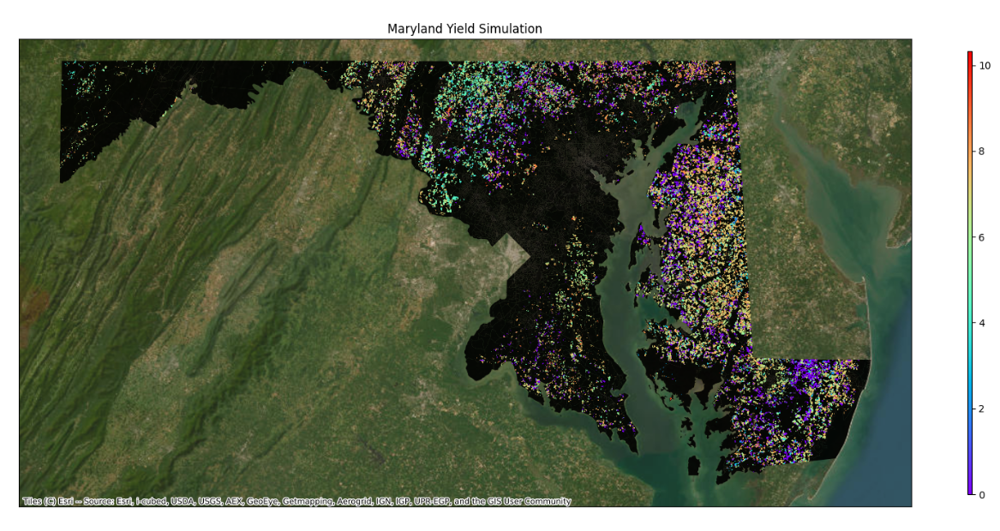

Geo-Epic
A toolkit for geospatial crop simulations using EPIC model

Overview
This package expands the capabilities of the EPIC crop simulation model, to simulate crop growth and development across large geographies, such as entire states or counties by leveraging openly availabe remote sensing products and geospatial databases. Additionally, the toolkit features a unique calibration module that allows fine-tuning of model parameters to reflect specific local conditions or experimental results. This toolkit allows researchers to assess crop production potential, management scenarios and risks at broader scales, informing decision-making for sustainable agricultural practices.
Installation
Before starting the setup, ensure you have wget and conda installed.
Follow the links for corresponding installation guides.
Setup a Virtual environment. (conda Recommended)
Install the Geo-Epic ToolkitRefer to the user guide and quick start tutorials to understand the Geo-Epic simulation workflow.